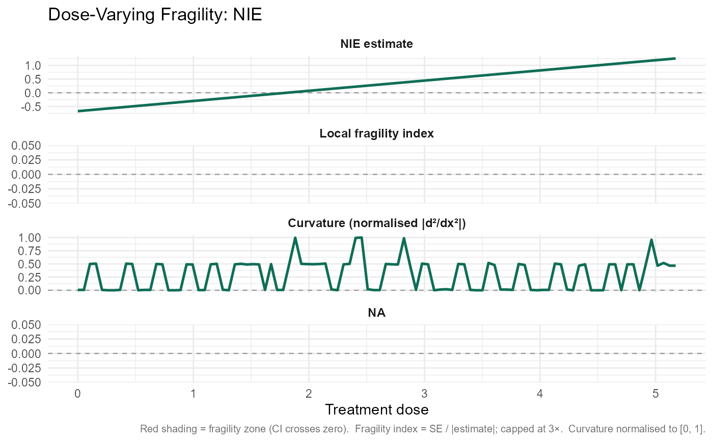

Computes the fragility curvature of the mediation effect across the full treatment dose grid. Returns local fragility index, numerical curvature of the effect curve, and a fragility zone flag at each dose value.
Usage
sensitivity_curvature(x, estimand = c("NIE", "NDE", "TE"))Value
A data frame with columns dose, estimate, lower, upper,
se_approx, frag_local, curvature, and in_fragility_zone.
Examples
# \donttest{
data(sim_mediation)
fit <- robustmediate(
X ~ Z1 + Z2, M ~ X + Z1 + Z2, Y ~ X + M + Z1 + Z2,
data = sim_mediation, R = 20, verbose = FALSE
)
#> Warning: `R < 50`; bootstrap intervals may be unstable.
curv <- sensitivity_curvature(fit, estimand = "NIE")
plot_curvature(curv)

# }